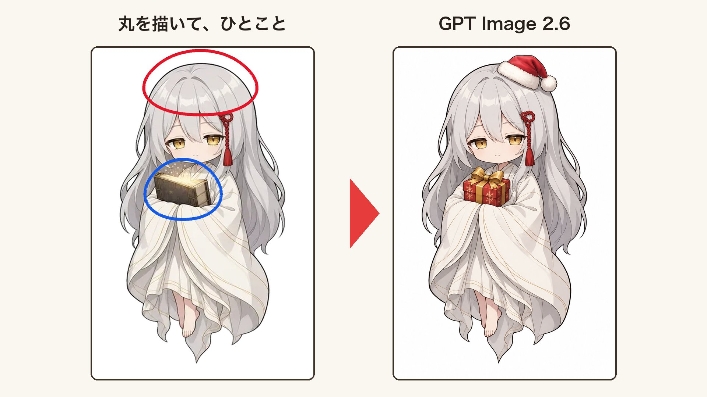
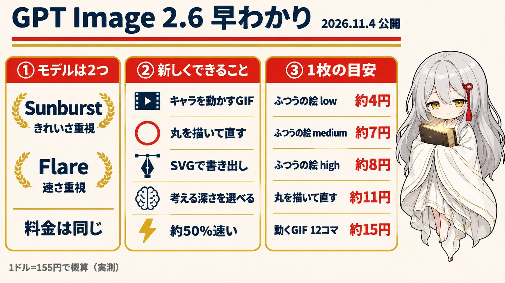

Author: @IHayato · original source
作者声明 2.6：GPT Image 2.6が出たので、さっそく試してみました。
作者称直出 GIF · X 附件实际 MP4 · 作者声明 + 媒体元数据已核 · 未观看 · 未复测
License unknown. Local archive, not an author grant. MIT covers source code only.


まばたきして、ふわっと揺れて